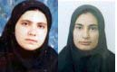

|
|
|
Browsing
Contact Us |
Campaigners |
Face to Face |
Tribune |
Interview |
News |
On the Web |
One Million |
Report
Farsi | Français | German | Italian | Spanish | العربية Also in this section
|
 Ronak and Hana Remain in Prison In Kurdistan Province Hana Abdi’s Mother: The Courts Have Told Me to Come Back in One MonthSunday 11 November 2007 Ronak and Hana Remain In Prison Hana Abdi’s Mother: The Courts Have Told Me to Come Back in One Month Change for Equality, November 11, 2007: Inquiries about the whereabouts of Hana Abdi and the reason for her arrest by family members have remained unanswered. Shamsi Asghari Hana Abdi’s mother has explained that "on the 4th of November, 2007 when Hana was first arrested, I went to the local office of the Security and Information Ministry. We were only successful in speaking to one official at this office and we were told to come back and follow up on the case of Hana in 3-4 days. Today we went to the same office and again we were only successful in speaking to one official there. We were told this time, that we should inquire about her case in one month at the Judiciary!! When we asked them about Hana’s crime and the charges against her, we were not provided with a clear answer and instead we were told that these issues will be addressed at a later point." Hana’s mother explained further that "the treatment she received from officials at the local office of the Information and Security Ministry was not appropriate and in fact we were scolded by officials ’what kind of daughter have you raised?’ Farid Abdi, Hana’s brother who is 24 years old explains that "Hana was only active on women’s issues. Last winter their group conducted literacy courses for illiterate women in villages [surrounding Kurdistan Province]." Farid continued further: "Hana was active and worked to promote women’s empowerment with her friends in Azar Mehr Women’s NGO. They would celebrate the addicted women’s successful attempt at overcoming their addictions. These celebrations were paid for out of pocket by the young volunteers, like Hana and Ronak, at Azar Mehr Women’s NGO. They had established small funds through volunteer contributions from friends and family which they would use to provide assistance to female-headed-households and they would visit these families. They conducted classes on women’s rights and woman’s history for women, and their activities were limited to women’s empowerment. And we helped them. We collected signatures in support of the Campaign. I believe in the equality between men and women, Hana and Ronak were my teachers, so how can I not believe in the equality between men and women?" It should be noted that Ronak also contacted her family recently. In this telephone conversation, Ronak explained to her family that she cannot understand why she is still being detained, as her interrogations seem to have come to a close. According to her family members Ronak did not seem in good spirits during this conversation. Hana Abdi Arrested in Kurdistan, Ronak Safarzadeh Still in Prison Change for Equality: November 6 Hana Abdi an active member of the Campaign in Kurdistan Province, and a women’s rights activist, was arrested on Thursday November 4, 2007, one month after the arrest of Ronak Safarzadeh also an active member of the One Million Signatures Campaign in Sanandaj, Kurdistan. Hana is a friend and colleague of Ronak’s, who while both being active in the Campaign were also members of Azar Mehr a women’s NGO. According to her family members, Hana was arrested by security officers in her grandfather’s home in Sanandaj, Kurdistan Province. After the arrest of Hana the 7 security officers, went to her father’s home where they searched the premises and confiscated her computer and educational pamphlets related to the Campaign. Hana is 21 years old and a student of Psychology at Payame Noor in Bijar. Hana was active in the collection of signatures in support of the Campaign’s petition. It seems that efforts to silence women’s rights activists, and especially those involved in the One Million Signatures Campaign, have taken on new dimensions. Delaram Ali, another member of the Campaign, received a sentence of prison through an appeals court finding on November 4, Hana Abdi has been arrested on the same day and Ronak Safarzadeh remains in prison, on unspecified charges with no contact with her family and no access to her lawyers. Ronak Safarzadeh Remains in Prison, Her Mother Beaten by Officials Change for Equality: November 3, 2007: Judiciary Official Agents in Sanandaj physically assaulted Ronak Safarzadeh’s mother on October 30, 2007 who was following up on the case of her daughter at the Judiciary. Ronak’s mother was trying to find out from judiciary officials why there was no news on the condition of her daughter, but instead of receiving answers she was greeted with the objection of judiciary officials who physically beat her. Ronak Safarzadeh is an active member of the One Million Signatures Campaign in Sanandaj Kurdistan who was arrested on October 9 at her home. Last Thursday, after spending 18 days in detention without any contact with her family, judiciary officials extended for one month the order of arrest for Ronak. According to reports, Ronak is being held in the detention center within the local office of the Ministry of Information and Security. Ronak Safarzadeh Remains in Detention: Arrest Order Renewed Change for Equality: October 29, 2007: Eighteen days have passed since the arrest of Ronak Safarzadeh, an active member of the One Million Signatures Campaign in Sanandaj, Kurdistan. During this time no information or news about Ronak’s whereabouts and condition had been made available to her family members by judiciary and information ministry authorities. On October 27th, 2007, however, her family was informed that an arrest order had been issued for Ronak. Ronak sister in an interview with the Change for Equality explained that "on Thursday court proceedings were held in the case of Ronak and authorities informed us that during these court proceedings the arrest order of Ronak was renewed for the period of one month." Ronak’s sister explained further that family members were not allowed to visit with Ronak during her court hearing. "They have informed us that Ronak is being held in the local offices of the Information Ministry, but we don’t know how accurate this information actually is." In a brief telephone conversation with her family members yesterday, Ronak asked her family to ensure that she has lawyers representing her in this case. Despite this request and the family’s follow-up in securing legal representation for Ronak, locally based lawyers who have agreed to represent this 21 year member of the One Million Signatures Campaign, have not bee provided access to her case files. It should be noted that in an effort to secure Ronak’s release, her mother has tried to change the arrest order to an order for bail, but has yet to receive any response from local authorities. A statement of protest regarding the arrest of Ronak Safarzadeh asking for her immediate release was issued last week and signed by over 600 equal rights defenders. A translation of that statement in provided below. Statement of over 600 Equal Rights Defenders More than ten days have passed since security forces in Sanandaj stormed the home of Ronak Safarzadeh and arrested this women’s rights activist and member of the One Million Signatures Campaign. To date, authorities have provided no information about the whereabouts and condition of Ronak to her family. Ronak’s mother has repeatedly inquired about the whereabouts and status of her daughter from officials at the judiciary, but instead of receiving an appropriate response or information has been repeatedly insulted and ridiculed by authorities. We the signatories of this statement while endorsing the just demands and peaceful activities of Ronak and other activists involved in the One Million Signatures Campaign who are only asking for changes in discriminatory laws against women through the collection of signatures, and while acknowledging the additional discrimination imposed upon Kurdish women through the current legal system, condemn the illegal arrest of Ronak Safazadeh and the mistreatment of her mother and demand her immediate and unconditional release and information regarding her current whereabouts and status. Arrest of Ronak Safarzadeh Campaign Member in Kurdistan Change for Equality: October 10, 2007, Ronak Safarzadeh, a member of the One Million Signatures Campaign was arrested at her home in Sanandaj, Kurdistand on Tuesday October 9, 2007. According to reports from the Kurdistan Human Rights News Agency, security forces arrived at the home of Ronak Safarzadeh. After search and seizure of property, including her computer, copies of the petition of the Campaign and the booklet of the Campaign explaining laws, Ronak Safarzadeh was arrested and transferred to the detention center of the local Office of Information and Security Ministry in Sanandaj, Kurdistan. According to reports, the nature of the arrest of Ms. Safazadeh and the search of her home by security forces was violent. Ronak Safarzadeh is a graphic artist, and women’s rights activist. She is a member of Azar Mehr NGO in Kurdistan, Iran. Prior to her arrest, Ms. Safazadeh attended a program commemorating the International Day of the Child, on Monday October 8, 2007, during which she engaged in discussions with participants about the Campaign and collected signatures in support of its petition. Despite the fact that the collection of signatures in support of the Campaign asking the parliament to reform laws which discriminate against women, is not an illegal activity, nine security agents arrived at her home in three cars the following day to arrest her. There is no information on the whereabouts of Ms. Safarzadeh since her arrest and her family has not been able to contact her or obtain additional information about the charges against her. Updates on her status will be provided on this site, as they are made available. Forum posts:4 |